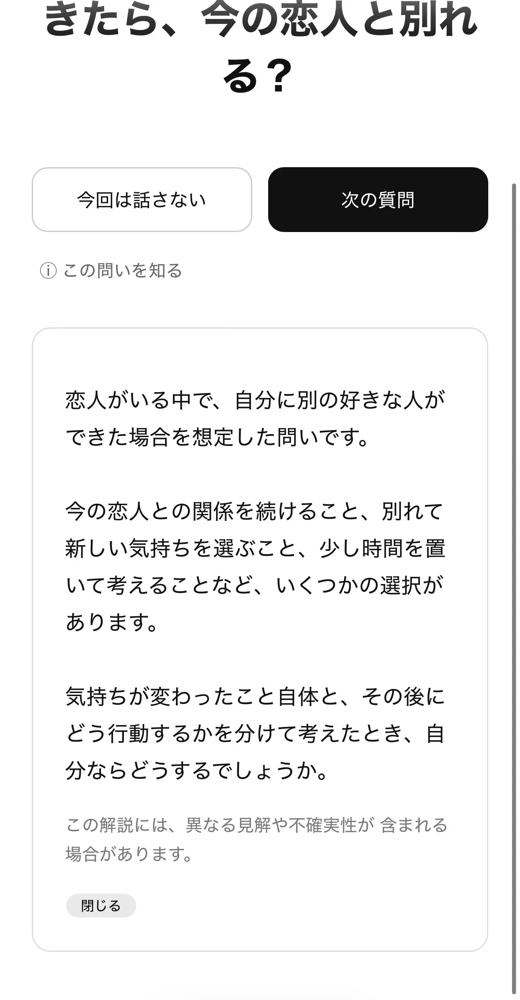
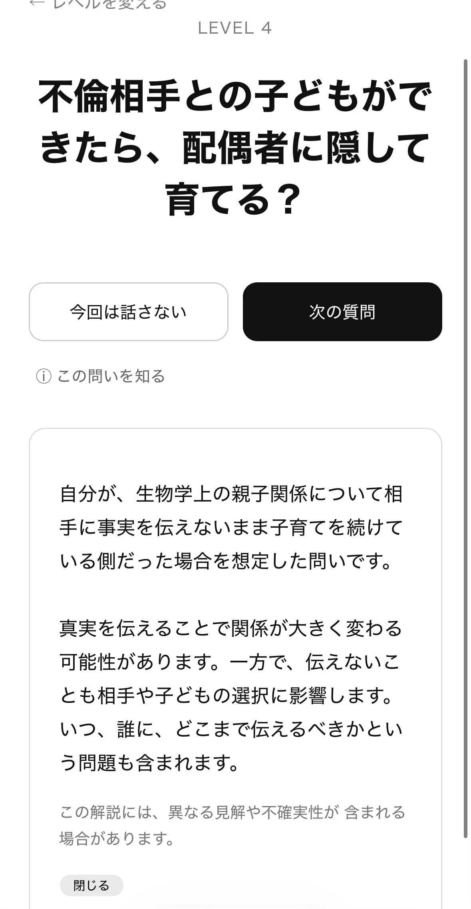

はじめに
Omoiの公式Webを開き、気になる質問を選びます。

問いの解説
質問の背景や、考えるときの視点を確認できます。解説を読んだ後は「閉じる」で質問へ戻ります。


よくある質問
質問に答えられないときは？
答えなくて構いません。別の質問を選ぶ、時間を置くこともできます。
質問に正解はありますか？
ありません。Omoiは診断や採点をするものではありません。
問題を報告するには？
再現手順、期待した結果、実際の結果、ブラウザやOSなどをIssueへ書いてください。